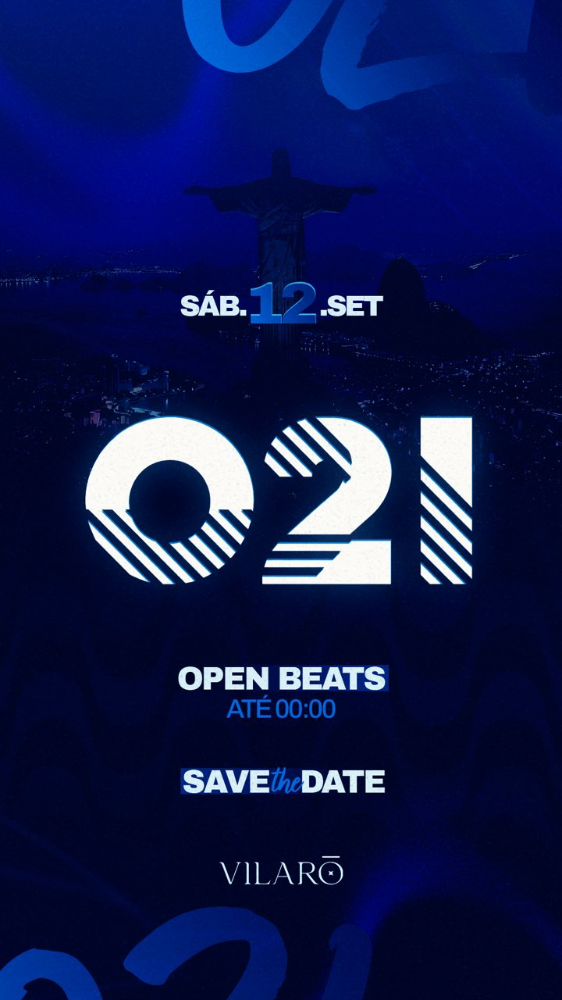

Ready 2 Go
Festas Em Cuiabá
Listas de desconto e grupo vip, tudo em um só lugar.
As festas são anunciadas no grupo primeiro.
11.09 · Sexta-Feira · DJ Kuririn e Everton Detona

12.09 · Sábado · Open Beats até 00:00
19.09 · Sábado · MC Don Juan